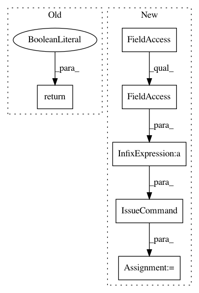

d6ef26173d1f2e65ec65570683e8ca43d054c8d4,perfkitbenchmarker/providers/azure/azure_virtual_machine.py,AzureVirtualMachine,_Exists,#AzureVirtualMachine#,223
Before Change
json.loads(stdout)
except ValueError:
return False
return True
@vm_util.Retry()
def _PostCreate(self):
Get VM data.
After Change
// "set" trick doesn"t work like it does for other resources
// because "vm set" doesn"t allow no-ops, so we are forced to
// actually parse the results of "show".
stdout, _, retcode = vm_util.IssueCommand(
[azure.AZURE_PATH, "vm", "show",
"--json",
self.name] + self.resource_group.args)
return retcode == 0 and stdout != "{}\n"
@vm_util.Retry()
In pattern: SUPERPATTERN
Frequency: 3
Non-data size: 6
Instances
Project Name: GoogleCloudPlatform/PerfKitBenchmarker
Commit Name: d6ef26173d1f2e65ec65570683e8ca43d054c8d4
Time: 2016-09-20
Author: nlavine@google.com
File Name: perfkitbenchmarker/providers/azure/azure_virtual_machine.py
Class Name: AzureVirtualMachine
Method Name: _Exists
Project Name: GoogleCloudPlatform/PerfKitBenchmarker
Commit Name: d6ef26173d1f2e65ec65570683e8ca43d054c8d4
Time: 2016-09-20
Author: nlavine@google.com
File Name: perfkitbenchmarker/providers/azure/azure_network.py
Class Name: AzureVirtualNetwork
Method Name: _Exists
Project Name: GoogleCloudPlatform/PerfKitBenchmarker
Commit Name: d6ef26173d1f2e65ec65570683e8ca43d054c8d4
Time: 2016-09-20
Author: nlavine@google.com
File Name: perfkitbenchmarker/providers/azure/azure_network.py
Class Name: AzureStorageAccount
Method Name: _Exists